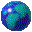
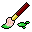
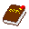

last update 7/30/2023 - a wallpaper! i guess
sorry for not touching in a while :(
still figuring out how to go about guestbook part 2
view page source & history on github!
🗕
🗖
🗙
Untitled
Go!
<-
->
Sometimes it's nice to step back and explore the wider web.
Name:
Message:
Send
Undo
Redo
Set BG color
  